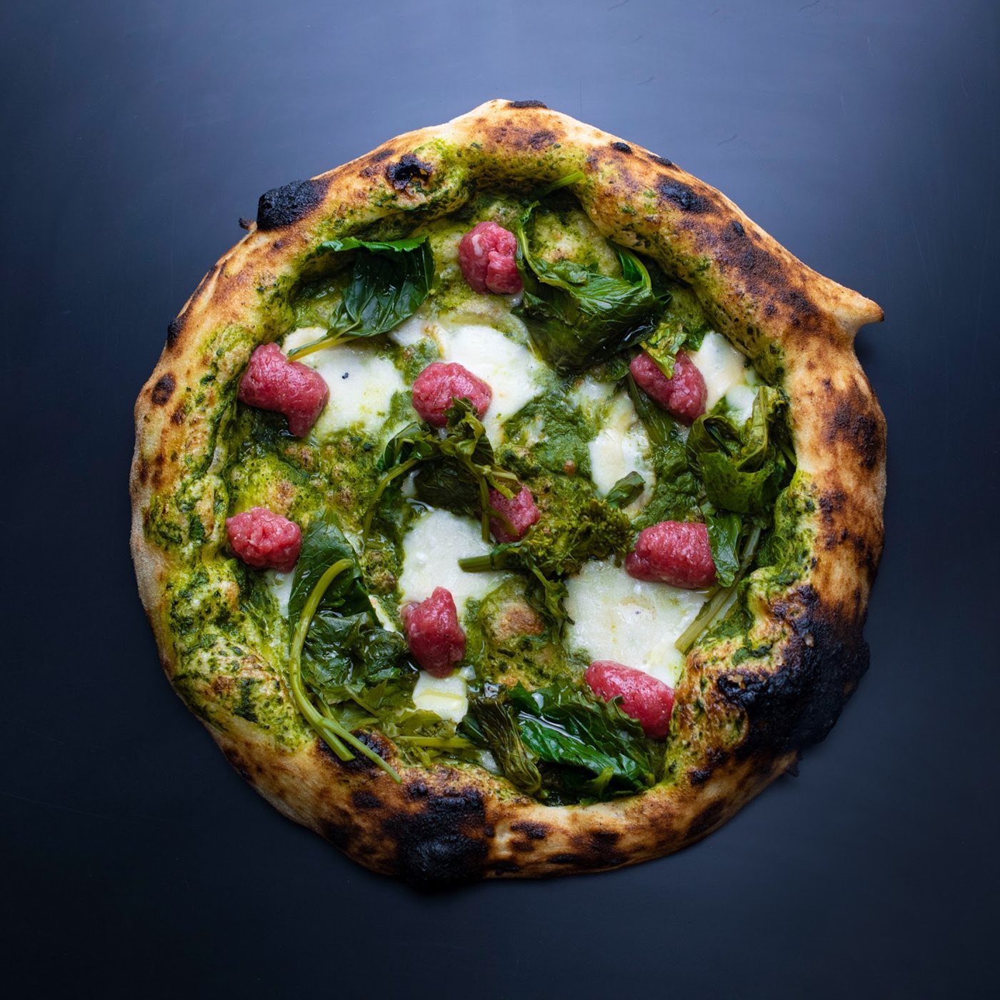
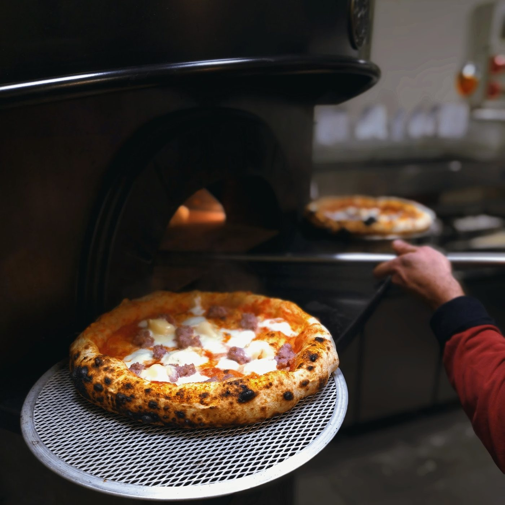
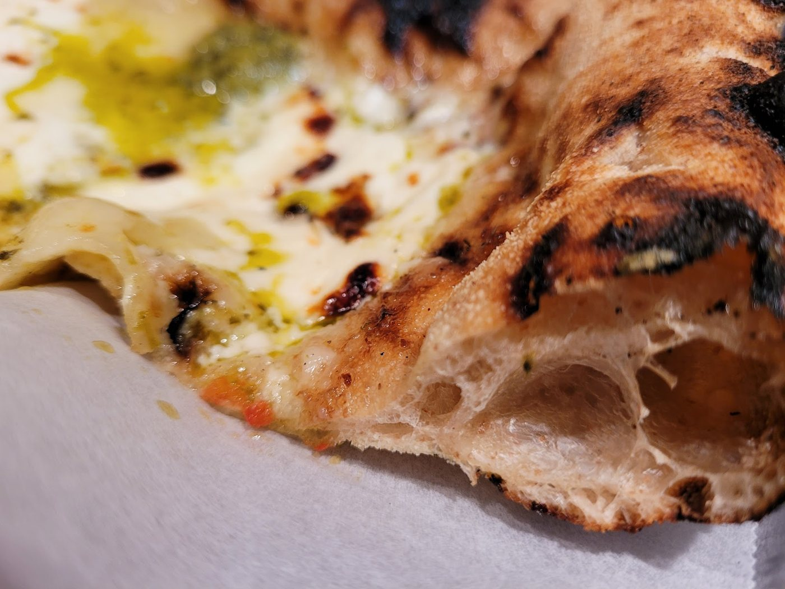
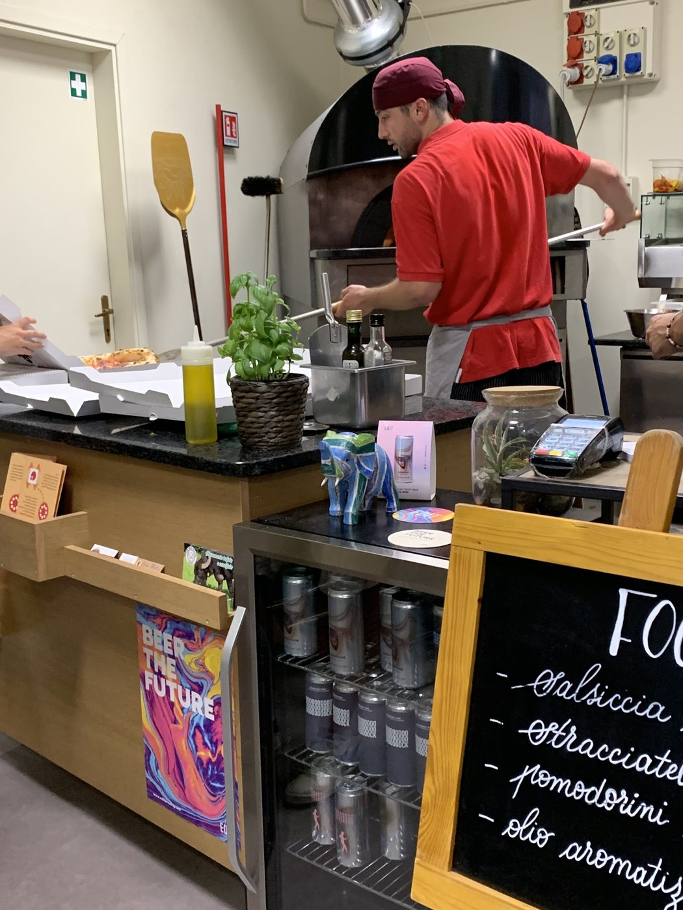
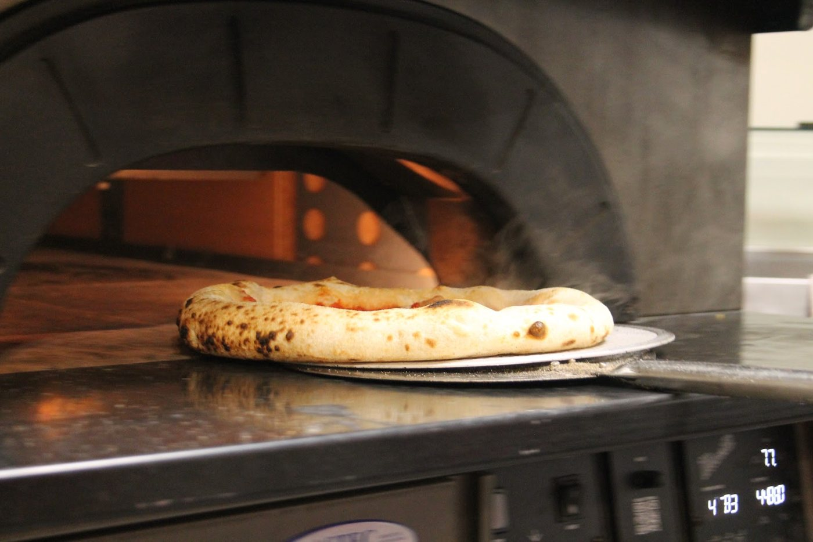

Via Carlo Alberto 6 · Chieri
Pizza napoletana, ingredienti di casa.
Cornicione alto, impasto leggero e materie prime che arrivano da pochi chilometri: la bufala di Carmagnola, la toma chierese, la salsiccia di Chieri. Da portare a casa, o da mangiare qui.
4,6 su Google · 266 recensioniImpasto integrale +1 €Asporto

Salsiccia e friariellicon la salsiccia nostranaIl forno
Leggera, davvero.
«Impasto super digeribile», scrivono in tanti nelle recensioni. Forno ben caldo e un cornicione che si gonfia come deve.



Chilometro zero
Da qui a qui.
I nostri ingredienti hanno un nome e un indirizzo. Tocca un paese sulla mappa per sapere cosa arriva da lì.
I panuozzi
Hanno il nome delle nostre vie.
L'impasto della pizza cotto a forma di panino e farcito. Ognuno porta il nome di una via o di una piazza di Chieri: tocca la targa e scopri cosa c'è dentro.

Orari
Il forno si accende alle 18:30.
Via Carlo Alberto 6 · 10023 Chieri (TO)
Soprattutto asporto, con qualche tavolino dentro.